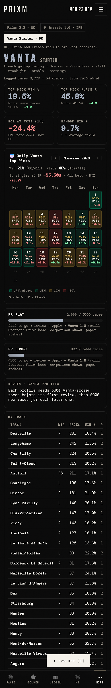

Performance → Vanta on a 390px phone today (real screenshot). Scroll inside the frame.

Proposed
Interactive — tap engines, chips, metric toggle, days, ‹ ›, swipe the calendar, sort tracks, collapse sections.
PRIXMMON 23 NOV ☰
🏇RACES
⭐GOLDEN
💷LEDGER
🐎MT
⋯MORE
What changes
Phone only (≤700px). PC stays exactly as it is.
1Engine switch on one row, pinned. PRIXM / ☘ EMERALD / VANTA as a 3-way switch with the version under each name. Stays at the top while you scroll, so you can switch engine from anywhere.
2Jump chips. Overview · Calendar · Tracks · Factors · Calibration. Tap to jump; the chip lights up as you scroll past each section. No more scrolling 6 screens to find the track list.
3Sections fold. Each card has a header with its key number (e.g. Tracks · best Mont-de-Marsan 32.7%). Fold the ones you don't use; the app remembers.
4Calendar shows one number per day, big. Pick Place % / Win % / P&L — colour follows that number. Swipe left/right (or ‹ ›) for months. Tap a day → sheet with every top pick that day: time, track, horse, finish, SP.
5Tables become lists. By Track = name, races, win-% bar, ROI chip. Sort by Races / Win % / ROI. Top 8 first, "Show all" for the rest. Nothing cut off the right edge.
6KPIs smaller. 2×2 tiles at half the height, the vs-Prixm diff kept.
7Log bet button out of the way. Round ＋ that hides while you scroll down, comes back on scroll up. "↑ Top" pill appears after a long scroll.
Same pattern can then go on Golden, Combos, Trends, Watchback, Track Explorer stats. Tell me what to change, or "looks good" and I'll build it into the app.